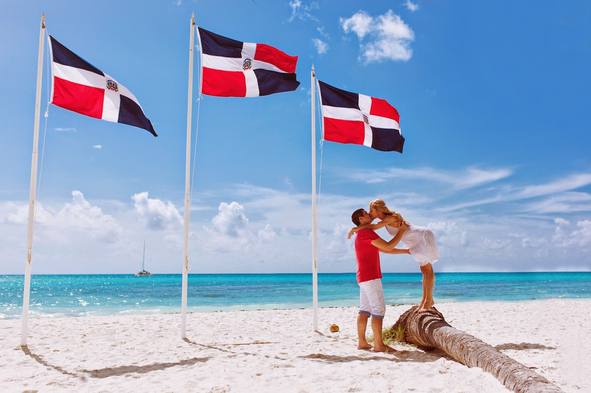

About Me
My name is Cesar. I am Santo Domingo, Dominican Republic, an island in the caribbean. I am 24 years old and I like to do Mountain Bike and play video games. I work for Scotiabank as a Financial advisor and I am making my way to my carreer as a developer. I dream with travelling to Canada and do camping. I love to serve others and help in all I can.
Dominican Republic
I always love to talk about my country. Dominican Republic (also known as DR or RD for spanish people) has a variety of landscapes, from deserts to alpine forests in the central mountains. Discover the highest mountain and deepest valley in the Caribbean, as well as rainforests, deserts, and white sand beaches!
